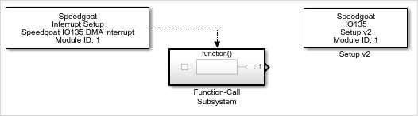
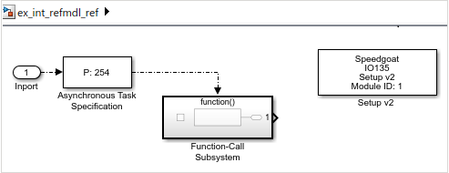
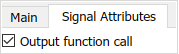
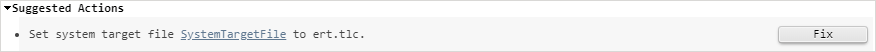
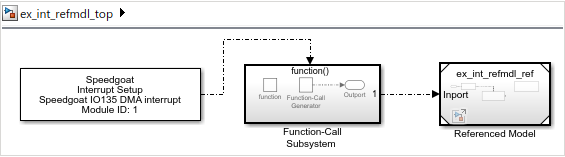
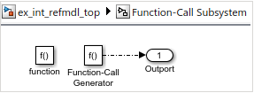
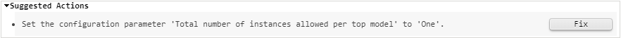

Interrupt Setup Usage Notes
Interrupt Setup Usage Notes — Using Interrupts with Referenced Models
Using Interrupts with Referenced Models
![[Important]](images/important.png) | Important |
|---|---|
This documentation applies to Speedgoat I/O Blockset v9.3.1 and later. |
![[Note]](images/note.png) | Note |
|---|---|
If you are using a HDL Coder Integration Package (HCIP), then please also refer to the HCIP Best Practice help and in particular the section entitled FPGA/CPU Synchronization and Start/Stop Behavior. |
The Interrupt Setup block cannot be used inside a referenced model due to a limitation within Simulink Coder, which does not allow asynchronous blocks to be used in this context.
When used as model trigger, the Interrupt Setup block must be placed in the top level model. This will define the fundamental sample time used by all referenced models.
If your application requires asynchronous interrupts generated by Speedgoat I/O modules to be used within referenced models, simply follow the steps in the example below.
Required Changes in the Referenced Model
Let us start with a model that uses the interrupt of the IO135 I/O module to trigger a Function-Call Subsystem. Our goal is to integrate this as a model reference in a top model named ex_int_refmdl_top.slx

Copy the Interrupt Setup block into your top model and replace it with an Inport and an Asynchronous Task Specification block

Configure the Inport so that it generates a function call output

Configure the Asynchronous Task Specification block so that it specifies the same priority as the Interrupt Setup block: The default setting is High which translates to a priority value of 254
Note By implementing these changes, the model can no longer be built by itself and the following error message will display:

Do not click the Fix button. The code generation target must remain set to a Simulink Real-Time system target file (STF).
Required Changes in the Top Model
Place the Interrupt Setup block in the top level model and add your Model Reference

If you copied the Interrupt Setup block from the referenced model, the block will retain its configuration. Otherwise, you can find all Speedgoat interrupt sources from your referenced models using the Select Interrupt button in the Interrupt Setup block mask.
Instead of connecting the Interrupt Setup block's output directly to the referenced model, you must add a Function-Call Subsystem in between. In this subsystem, add a Function Generator block and connect its output to an Outport

Connect the output of the Function-Call Subsystem to the Model Reference block
When you build the top model, you will see this error message:

Use the Fix button to restrict the number of allowed instances to 'One'. The build should now succeed and it will also build the referenced model.